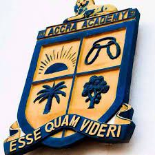
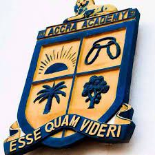

Accra Academy was founded on July 20, 1931, by four visionary educators—Kofi George Konuah, Samuel Neils Awuletey, Gottfried Narku Alema, and James Akwei Halm-Addo—in Mantse Agbonaa, a suburb of James Town in Accra. With a startup capital of £200 and an initial enrollment of 19 students in a one-storey building called Ellen House, the school aimed to provide affordable secondary education to brilliant but financially disadvantaged boys. The founders served as the first teaching staff, focusing on English, Mathematics, Science, Business Studies, and Agriculture, while emphasizing character formation through daily devotions and moral instruction.

The early years were marked by financial difficulties, limited infrastructure, and high teacher turnover. Despite these hurdles, the school's impressive examination results led to its recognition by the Department of Education. In 1950, following a recommendation, Accra Academy became a Government-Assisted School, gaining access to better funding and qualified teachers. Under A.K. Konuah's leadership, the school introduced the Sixth Form program, emphasizing science, mathematics, and business education. Konuah traveled across Ghana to recruit talented students, promoting equal opportunity and expanding enrollment.

Due to growing enrollment, the school relocated to a 37-acre plot at Bubuashie in 1961, designed by Barnes, Hubbard & Arundel. The new campus, opened in 1962, featured modern classrooms, libraries, and science labs, earning the nickname "Little Legon" for its resemblance to the University of Ghana. J.K. Okine introduced Business Education in 1970, and the Parent-Teacher Association (PTA) was established in 1973. By its Golden Jubilee in 1981, the school had 900 students and 52 staff, celebrating with the creation of its song and anthem.
V.B. Freeman introduced Computer Science in the 1980s, making Accra Academy one of Ghana's first ICT-focused schools. Mrs. Beatrice Lokko, appointed in 1997 as the first female headmistress, launched the school's website in 2002, added internet connectivity, and established a Guidance and Counselling Department. Under her leadership, scholarships for needy students and extracurriculars flourished. The 70th anniversary in 2001 was attended by President John Agyekum Kufuor.
Rev. William Foli Garr (2017–2020) upgraded labs, expanded the dining hall, and added an e-library. Emmanuel Ofoe Fiemawhle, appointed in 2020 amid COVID-19, completed the Administration, Library, and ICT Block. Recent milestones include a 98.9% WASSCE pass rate in 2006, a solar-powered football field in 2012, and an astroturf pitch in 2017 sponsored by alumnus Asamoah Gyan.


Ranked 8th in Africa's top 100 high schools in 2003 by Africa Almanac, Accra Academy has produced leaders like J.A. Ankrah (head of state), Chief Justices Samuel Azu Crabbe and Fred Apaloo, and sports icons Ohene Djan and Asamoah Gyan. It's the first school to produce successive Chief Justices, Speakers of Parliament, and a head/deputy head of state in the same government. With 4,381 students and 226 staff today, the school's ethos of "every child counts" continues to inspire.
To provide quality education and foster holistic development for students to become responsible leaders.
To be a world-class institution producing innovative and ethical leaders for tomorrow.
Accra Academy offers a diverse curriculum including Business, General Science, General Arts, Agricultural Science, and Visual Arts, leading to the West African Senior School Certificate. With a legacy of academic rigor, the school achieved a 98.9% WASSCE pass rate in 2006.
Our state-of-the-art facilities, including science laboratories and a new ICT Block, support innovative learning, preparing students for higher education and global careers.
Life at Accra Academy extends beyond the classroom with vibrant extracurriculars like sports, the Cadet Corps, and student exchange programs with Germany. Boarding facilities such as Ellen House and KG Konuah Hall foster a strong community spirit.
Students engage in work-study programs, leadership opportunities, and community projects, enhancing their personal and social skills.
 



Bubuashie, Accra - Ghana
📞 +233 (0)30 222 2405
✉️ [email protected]